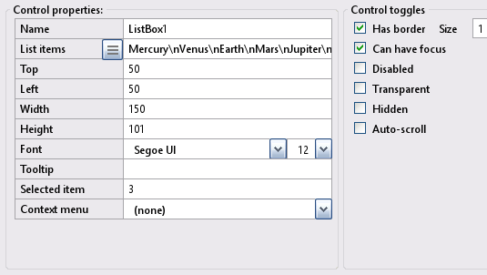
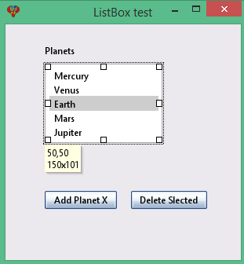

Toolbox ListBox
The ListBox in an InForm application presents the user with a list of selectable items, displaying all items including the selected one. This page provides more detailed information about list boxes.
ListBox control
Create a new ListBox control by clicking the ListBox icon in the Toolbox. The newly created control will be displayed in the preview window; allowing you to move it around to meet your design requirements. Edit the ListBox properties as necessary.7) ListBox Properties:
ListBox example: Preview window.
Note: ListBox properties will reflect the highlighted control selected in the preview window, enabling you to customize it as needed.
The ListBox presents the user with a list of selectable items, displaying all items, including the selected item.
Design time:
At design time, you can add items to the ListBox by modifying the List Items property. To add multiple items, separate them using a new line escape sequence (\n).
Alternatively, you can copy a list from an existing file and paste it into the list items box. Click into the list items box, then click the sandwich button (the button with three lines) and press enter.
To pre-select an item, set the "Selected item" Value property to the index of the desired item.
By selecting the Auto-scroll property, scroll bars are automatically added when necessary to ensure all items are accessible within the ListBox.
Runtime:
At runtime, you add new items to the end of the list using the subroutine AddItem.
Scroll bars are automatically added (if the auto-scroll property is enabled) when the number of items exceeds the display area.
AddItem ControlID, "Item"At runtime, you delete an item using RemoveItem.
RemoveItem ControlID, ItemIndexToRemove%At runtime, you can determine which item is currently selected by reading the Value property.
theItem% = Control(ControlID).ValueTo retrieve the text of the selected item, use the GetItem method.
DesiredItem$ = GetItem$(ControlID, ItemIndexToRead%)Here's a concise summary of the code snippet for obtaining both the index and value of the selected item from a ListBox:
If you want to know which item index was selected by the user:
theItem% = Control(DropdownList1).Value
It you want to know the contents/text of the item selected:
theItem$ = GetItem(DropdownList1, thisItem%)
Also, the best place for that would be the ValueChanged event instead of the Click event.ListBox example - refer to the above image.
Specification: Let the list box example have the following design specification:
- Planets Group: Add the following planets to the ListBox: Mercury, Venus, Earth, Mars, and Jupiter.
- Add Planet X Button: When clicked, this button adds a new planet (Planet X) to the ListBox.
- Delete Selected Button: When clicked, this button removes the currently selected item from the ListBox.
Implimenation: The following provide solutions for the above:
- At design time: Add the items (Mercury, Venus, Earth, Mars, Jupiter) to the ListBox using the control properties list items.
- Add Planet X Button: Uses the subroutine AddItem to add a new item (Planet X) to the ListBox. .
- Button "Delete Selected" uses subroutinf RemoveItem.
- For further information, refer to the file ListBoxExample.bas.
- At the layout stage, save the project using file -> Save project as and enter the name ListBoxExample.
Form file ListBoxExample.bas
': This program uses
': InForm - GUI library for QB64 - v1.5
': Fellippe Heitor, 2016-2024 - fellippe@qb64.org - @fellippeheitor
': https://github.com/FellippeHeitor/InForm
'-----------------------------------------------------------
Option _Explicit ' <---
Dim Shared count As Integer ' <---
': Controls' IDs: ------------------------------------------------------------------
Dim Shared ListBoxTest As Long
Dim Shared ListBox1 As Long
Dim Shared PlanetsLB As Long
Dim Shared AddPlanetXBT As Long
Dim Shared delBT As Long
': External modules: ---------------------------------------------------------------
'$INCLUDE:'InForm\InForm.bi'
'$INCLUDE:'InForm\xp.uitheme'
'$INCLUDE:'ListBoxExample.frm'
': Event procedures: ---------------------------------------------------------------
Sub __UI_BeforeInit
End Sub
Sub __UI_OnLoad
End Sub
Sub __UI_BeforeUpdateDisplay
'This event occurs at approximately 60 frames per second.
'You can change the update frequency by calling SetFrameRate DesiredRate%
End Sub
Sub __UI_BeforeUnload
'If you set __UI_UnloadSignal = False here you can
'cancel the user's request to close.
End Sub
Sub __UI_Click (id As Long)
Select Case id
Case ListBoxTest
Case ListBox1
Case PlanetsLB
Case AddPlanetXBT
count = count + 1 ' <---
AddItem ListBox1, "Planet X" + Str$(count) ' <---
Case delBT
RemoveItem ListBox1, Control(ListBox1).Value ' <---
End Select
End Sub
Sub __UI_MouseEnter (id As Long)
Select Case id
Case ListBoxTest
Case ListBox1
Case PlanetsLB
Case AddPlanetXBT
Case delBT
End Select
End Sub
Sub __UI_MouseLeave (id As Long)
Select Case id
Case ListBoxTest
Case ListBox1
Case PlanetsLB
Case AddPlanetXBT
Case delBT
End Select
End Sub
Sub __UI_FocusIn (id As Long)
Select Case id
Case ListBox1
Case AddPlanetXBT
Case delBT
End Select
End Sub
Sub __UI_FocusOut (id As Long)
'This event occurs right before a control loses focus.
'To prevent a control from losing focus, set __UI_KeepFocus = True below.
Select Case id
Case ListBox1
Case AddPlanetXBT
Case delBT
End Select
End Sub
Sub __UI_MouseDown (id As Long)
Select Case id
Case ListBoxTest
Case ListBox1
Case PlanetsLB
Case AddPlanetXBT
Case delBT
End Select
End Sub
Sub __UI_MouseUp (id As Long)
Select Case id
Case ListBoxTest
Case ListBox1
Case PlanetsLB
Case AddPlanetXBT
Case delBT
End Select
End Sub
Sub __UI_KeyPress (id As Long)
'When this event is fired, __UI_KeyHit will contain the code of the key hit.
'You can change it and even cancel it by making it = 0
Select Case id
Case ListBox1
Case AddPlanetXBT
Case delBT
End Select
End Sub
Sub __UI_TextChanged (id As Long)
Select Case id
End Select
End Sub
Sub __UI_ValueChanged (id As Long)
Select Case id
Case ListBox1
End Select
End Sub
Sub __UI_FormResized
End Sub
'$INCLUDE:'InForm/InForm.ui'
Form file ListBoxExample.frm
': This form was generated by
': InForm - GUI library for QB64 - v1.5
': Fellippe Heitor, 2016-2024 - fellippe@qb64.org - @fellippeheitor
': https://github.com/FellippeHeitor/InForm
'-----------------------------------------------------------
SUB __UI_LoadForm
DIM __UI_NewID AS LONG, __UI_RegisterResult AS LONG
__UI_NewID = __UI_NewControl(__UI_Type_Form, "ListBoxTest", 300, 300, 0, 0, 0)
__UI_RegisterResult = 0
SetCaption __UI_NewID, "ListBox test"
Control(__UI_NewID).Font = SetFont("segoeui.ttf", 12)
Control(__UI_NewID).HasBorder = False
__UI_NewID = __UI_NewControl(__UI_Type_ListBox, "ListBox1", 150, 101, 50, 50, 0)
__UI_RegisterResult = 0
AddItem __UI_NewID, "Mercury"
AddItem __UI_NewID, "Venus"
AddItem __UI_NewID, "Earth"
AddItem __UI_NewID, "Mars"
AddItem __UI_NewID, "Jupiter"
Control(__UI_NewID).HasBorder = True
Control(__UI_NewID).Value = 3
Control(__UI_NewID).CanHaveFocus = True
Control(__UI_NewID).BorderSize = 1
__UI_NewID = __UI_NewControl(__UI_Type_Label, "PlanetsLB", 150, 23, 50, 22, 0)
__UI_RegisterResult = 0
SetCaption __UI_NewID, "Planets"
Control(__UI_NewID).HasBorder = False
Control(__UI_NewID).VAlign = __UI_Middle
__UI_NewID = __UI_NewControl(__UI_Type_Button, "AddPlanetXBT", 92, 23, 50, 212, 0)
__UI_RegisterResult = 0
SetCaption __UI_NewID, "Add Planet X"
Control(__UI_NewID).HasBorder = False
Control(__UI_NewID).CanHaveFocus = True
__UI_NewID = __UI_NewControl(__UI_Type_Button, "delBT", 97, 23, 160, 212, 0)
__UI_RegisterResult = 0
SetCaption __UI_NewID, "Delete Slected"
Control(__UI_NewID).HasBorder = False
Control(__UI_NewID).CanHaveFocus = True
END SUB
SUB __UI_AssignIDs
ListBoxTest = __UI_GetID("ListBoxTest")
ListBox1 = __UI_GetID("ListBox1")
PlanetsLB = __UI_GetID("PlanetsLB")
AddPlanetXBT = __UI_GetID("AddPlanetXBT")
delBT = __UI_GetID("delBT")
END SUB
Events
Methods
List and Dropdown list controls' items are stored in the control's Text property, but they should be manipulated using the following methods. These methods update important internal variables used to display the control: